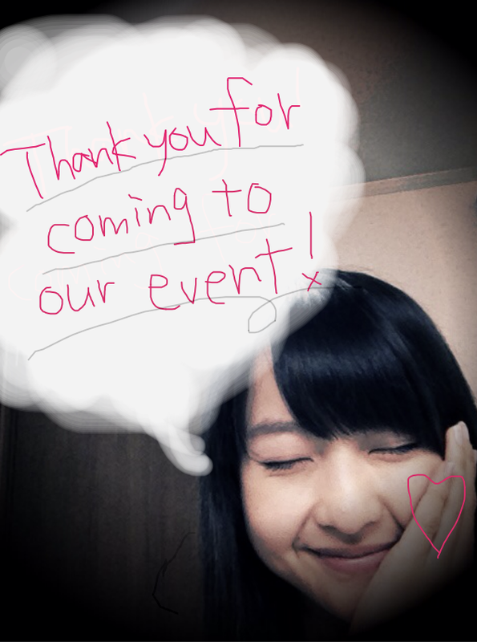

| 2011/11 18 Fri | 5回目*marika |
みなさん。おつかれ様ですッ!!
生声録音会、無事終了しました---------------!!!!!+。＊
イベントを楽しみに待っててくださったみなさん。
お仕事帰りや学校帰りの方
忙しい中イベントに来ていただき
ほんっと---にありがとうございました!!
みなさん、楽しんでいただけましたか??
.....はずかしかったですよね*←
みなさんとの距離も近くて緊張しました。
やっぱりですね.....
録音はいちばん緊張したし、はずかしかった///
かお熱かったです。ふ-ふ-
お話できる時間たくさんありましたが
緊張でうまく話せませんでした~泣
すみませんでした。
そして録音のとき、かんでしまってすみませんでした。
みなさんから応援メッセージを直接いただいて
とても感動しました。
お手紙、プレゼントありがとうございました!!
開けるの楽しみです^^*ふふ
BloGにコメントしてくださった方も
来ていただいて<3!!
ペンネームでわかりました!**

せっちゃん,まいやん,ゆったん,みゅうみゅう,みさみさ
おつかれ様でした---<3楽しかったよ*!
録音したメッセージは大切にしてくださいね★*
ちょいとはずかしいけどね!

今回のイベントは都合があって来れなかった方
外れてしまった方も次は絶対に会いましょうね>
みなさん、ありがとうございました。
これからも応援よろしくお願いします!
ニックネームはみなさんすきなように呼んでください^^
ベビたん*****bA by marika